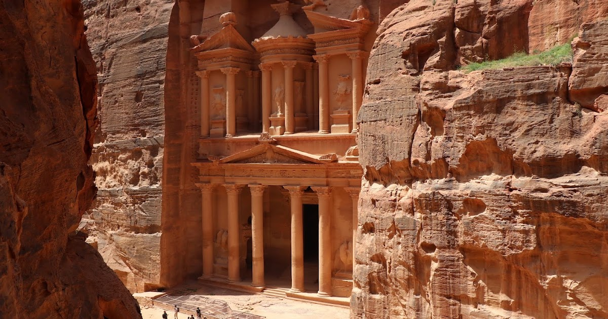
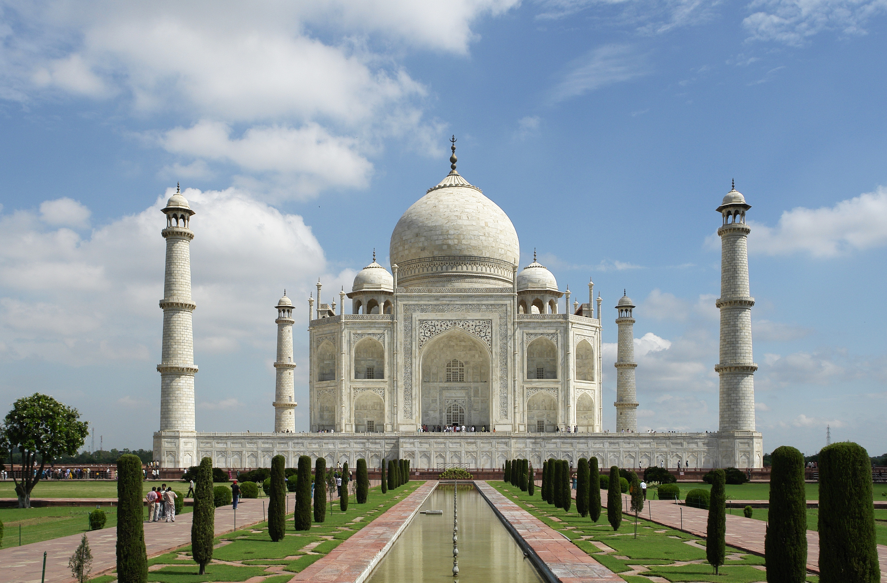
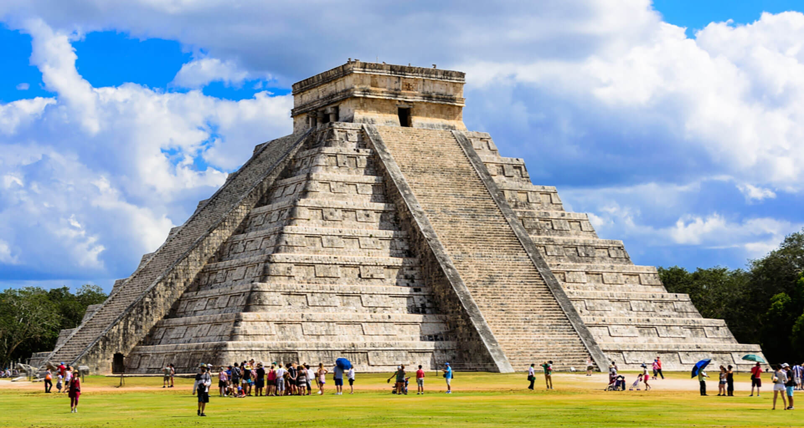
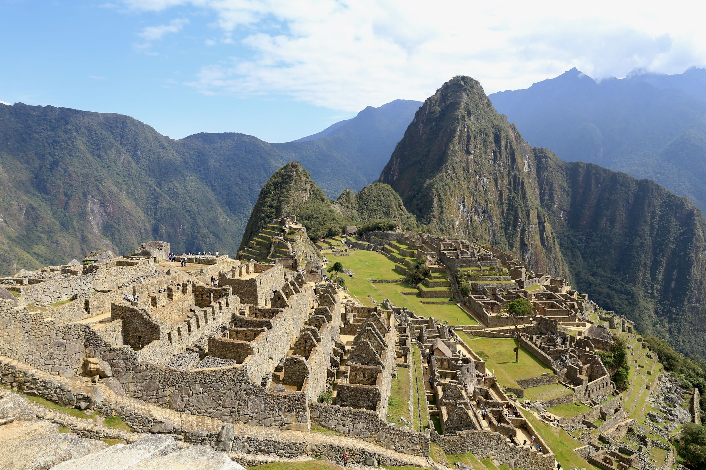

Cristo Redentor

O Cristo Redentor é um monumento de Jesus Cristo no Rio de Janeiro, inaugurado em 1931, com 38m de altura (30m de estátua e 8m de pedestal), símbolo do Brasil e uma das Sete Maravilhas do Mundo Moderno, localizado no Morro do Corcovado, representando paz e fé, e abrigando uma capela.
Coliseu

O Coliseu, ou Anfiteatro Flaviano, é o maior anfiteatro do mundo, construído em Roma entre 70-80 d.C. pela Dinastia Flávia. Com capacidade para até 80.000 pessoas, foi palco de sangrentas lutas de gladiadores, caças de animais e execuções. Na atualidade, é o monumento mais visitado da Itália, atraindo milhões de turistas anualmente, e faz parte do sítio arqueológico que inclui o Fórum Romano e o Palatino.
Petra

Petra, localizada no sudoeste da Jordânia, é uma das cidades arqueológicas mais famosas e extraordinárias do mundo, conhecida mundialmente como a "Cidade Rosa". Fundada por volta de 300 a.C. pelos Nabateus, uma civilização árabe nômade, Petra serviu como capital do seu reino e um importante entreposto comercial entre a Arábia, Egito e o Mediterrâneo. A cidade é um testemunho da genialidade dos Nabateus em engenharia, especialmente no controle de água em um ambiente árido.
Taj Mahal

O Taj Mahal um mausoléu luxuoso construído pelo imperador mogol Shah Jahan em Agra, Índia, entre 1632 e 1653, em memória de sua amada esposa favorita, Mumtaz Mahal (Aryumand Banu Begam), que morreu ao dar à luz seu 14º filho. O monumento, uma obra-prima da arquitetura indo-islâmica, simboliza o luto do imperador e sua devoção, utilizando mármore branco e pedras preciosas, com 20 mil artesãos e mais de mil elefantes trabalhando na construção, que levou cerca de 22 anos para ser concluída.
A Grande Muralha da China

A Grande Muralha da China teve sua construção iniciada no século 7 a.C., mas o monumento como conhecemos hoje foi consolidado durante a Dinastia Ming (1368-1644). Originalmente, a Muralha foi construída como uma defesa contra invasões de tribos nômades do norte da China, especialmente os mongóis. Após uma pesquisa arqueológica, descobriu-se que toda a toda a muralha, com todos os seus ramos, mede 21.196 km. A Muralha da China não fica em uma única cidade, mas estende-se por milhares de quilômetros ao norte do país, atravessando várias províncias. No entanto, os principais trechos turísticos (como Badaling, Mutianyu, Simatai e Jinshanling) estão localizados nos arredores de Pequim (Beijing), a cerca de 70-140 km da capital.
Chichén Itzá

Chichén Itzá é uma antiga e importante cidade maia localizada na Península de Yucatán, no México. O nome Chichén significa “boca do poço” e Itzá refere-se a quem o fundou, os Itzáes “feiticeiras da água”, por volta do ano 435. Daquela época até o ano 900, o povo de Putún, de origem Chontal e Itzá, chegou ao norte de Yucatán e construiu Chichén Viejo com elementos arquitetônicos e culturais Puuc. A principal Ruína Maia é a Pirâmide de Chichén Itzá ou El Castillo, mas existem outras igualmente importantes como o El Caracol ou Observatório, o Templo dos Guerreiros e o Tribunal de Baile Maia.
Machu Picchu

O Machu Picchu, também chamado de “Cidade Perdida dos Incas”, é um sítio arqueológico localizado no Peru, mais especificamente na província de Urubamba, no departamento de Cusco. Esse imenso santuário é considerado um dos locais mais enigmáticos da América Latina. Hoje, as ruínas deste grande símbolo do Império Inca encantam visitantes do mundo inteiro. Trata-se do local mais visitado do Peru e um dos mais visitados na América Latina. A partir de sua construção, podemos vislumbrar as técnicas, a engenharia e os conhecimentos arquitetônico e tecnológico do Império Inca. O Machu Picchu está situado na Cordilheira dos Andes, no topo de uma montanha a 2430 metros acima do nível do mar. Está localizado no vale do rio Urubamba, perto de Cusco, Peru, a antiga capital do Império Inca.
Abaixo está um vídeo que fala um pouco mais sobre cada Maravilha do Mundo Moderno: